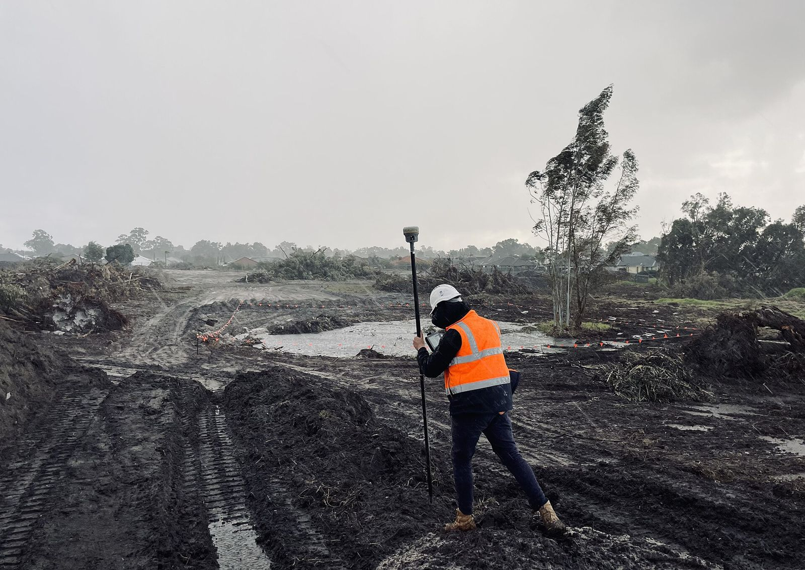
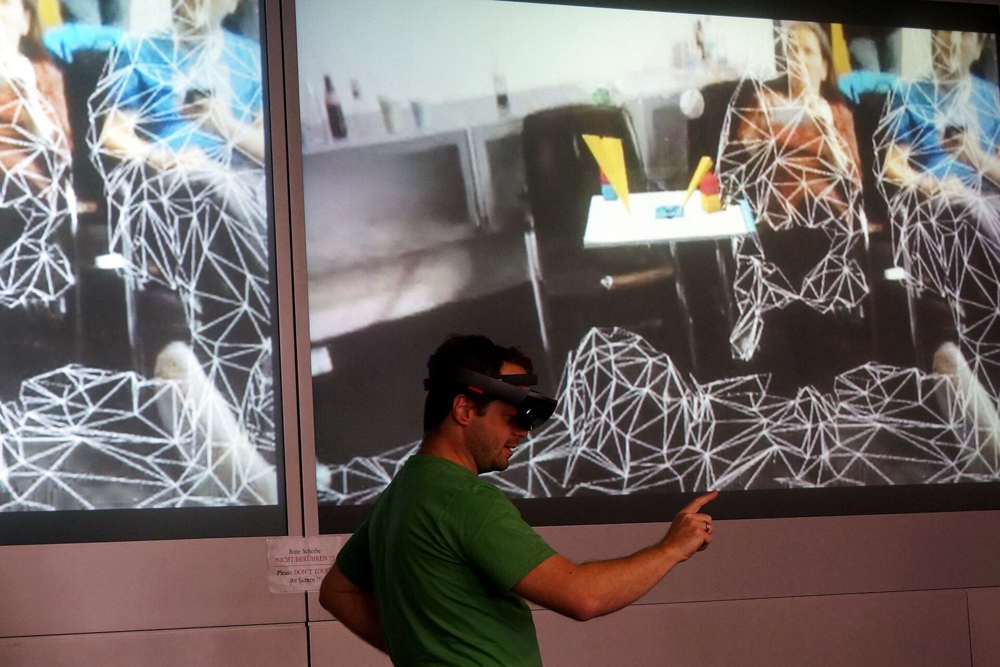
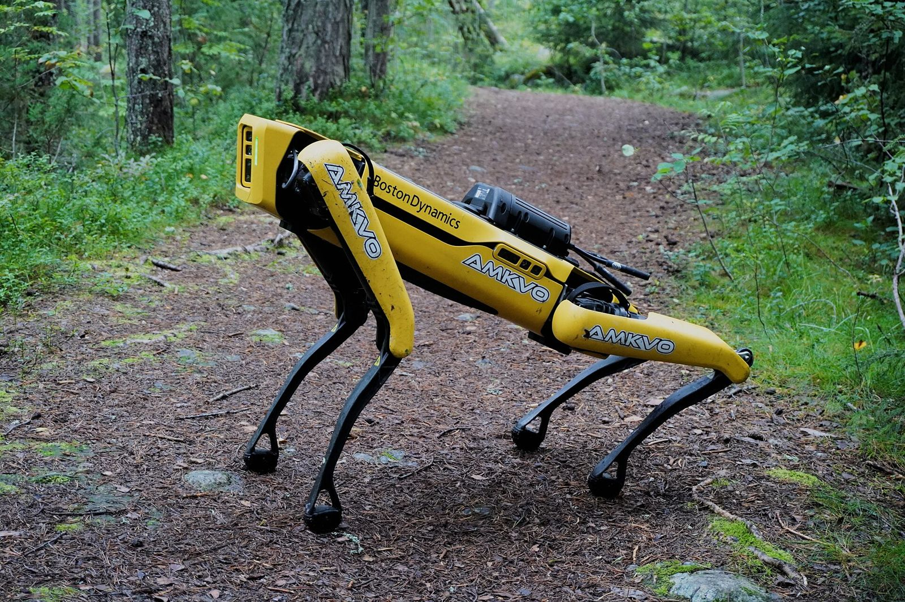
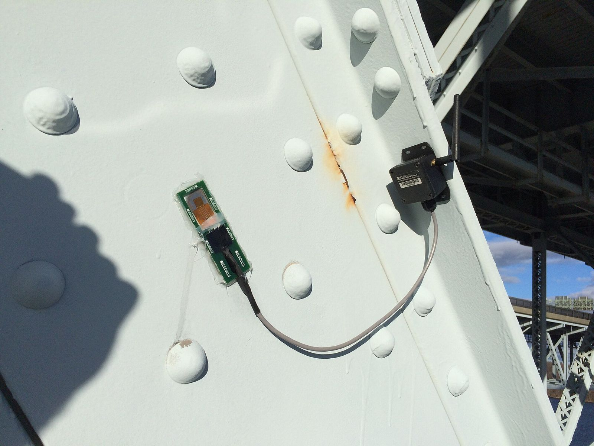

Reality Capture 연계 기술 지도
범위 렌즈: 전 산업을 훑되 건설·AEC를 주 렌즈로 삼는다. 같은 기술이라도 현장 시공·유지관리에서 어떻게 쓰이는지를 우선 본다.
0. 이 문서를 읽는 법 — 연결 지점이 먼저다
연계 기술을 나열하기만 하면 목록은 길어지고 쓸모는 줄어든다. 그래서 이 문서는 기술을 소개하는 대신 Reality Capture 파이프라인의 어느 지점에 무엇이 붙는가를 축으로 삼는다.
파이프라인을 다섯 단계로 끊는다.
| 단계 | 이름 | 하는 일 | 대표 산출물 |
|---|---|---|---|
| S1 | 계획·캡처 | 현장에서 센서로 원시 데이터를 얻는다 | 스캔 원본, 사진, 궤적 로그 |
| S2 | 정합·처리 | 여러 스테이션·경로의 데이터를 하나의 좌표계로 묶는다 | 통합 점군, 메시, 오소모자이크 |
| S3 | 의미화·모델링 | 점 덩어리에 이름을 붙여 객체로 만든다 | 분류된 점군, BIM/IFC 모델 |
| S4 | 배포·활용 | 사람과 시스템이 꺼내 쓴다 | 웹 뷰어, AR 중첩, 보고서 |
| S5 | 운영·갱신 | 반복 캡처로 모델을 살아 있게 유지한다 | 변화 이력, 자산 상태 |
아래 열 개 절은 모두 같은 틀을 쓴다. 연결 지점(어느 단계에 무엇이 들어가고 무엇이 나오는가), 결합 방식(구체적으로 어떻게 붙는가), AEC 관점(건설 현장에서 무엇이 달라지는가).
출처 표기는 (출처: 링크, 확인 2026-09-21, 성격) 형태다. 성격은 벤더/제3자/학술/표준 넷 중 하나다.
벤더 자료는 자사 제품 홍보가 섞여 있다고 보고 읽어야 한다.
1. BIM·디지털 트윈
연결 지점: S3 → S5. 통합 점군이 들어가고 IFC 같은 객체 모델이 나온다. 그 모델이 준공 후에는 자산 대장이 되고, S5의 반복 캡처가 다시 그 모델을 갱신한다. Reality Capture의 출구이자 재입구다.
결합 방식
- Scan-to-BIM 자동화. 점군에서 바닥·벽·개구부·경사 지붕을 인식해 IFC로 내보내는 SDK가 상용으로 나와 있다. Open Design Alliance의 Scan-to-BIM SDK는 RCP/RCS, LAS, PTS, PCD, XYZ를 입력으로 받고 기하 기반과 ML 보조 두 갈래 분류 파이프라인을 쓴다. 다만 이 제품은 아직 베타이고, 자동 방(room) 인식이나 대용량 점군 ML 지원은 2026년 로드맵 항목으로 남아 있다 (출처: https://www.opendesign.com/products/scan-to-bim, 확인 2026-09-21, 벤더). 인식 대상이 네 종류뿐이라는 점을 놓치면 안 된다. MEP 배관이나 구조 부재까지 자동으로 뽑는다는 주장은 벤더마다 편차가 크므로 따로 검증해야 한다.
- IFC 연계와 좌표 문제. 점군을 IFC로 옮길 때 가장 먼저 깨지는 것은 형상이 아니라 위치다. 9절에서 따로 다룬다.
- COBie로 넘어가는 운영 데이터. COBie는 장비 목록, 제품 문서, 보증, 예비품, 예방정비 일정을 준공 시점에 넘기기 위한 규격이다. 스프레드시트, STEP Part 21(IFC), ifcXML, COBieLite로 전달할 수 있다. 미국 NBIMS-US는 2011년 COBie 2.26을 표준의 일부로 승인했고, 영국 BS 1192-4:2014는 실무 지침으로 다루며, 미국 GSA P-100(2017)은 자본 사업의 납품물로 COBie를 요구한다 (출처: https://en.wikipedia.org/wiki/COBie, 확인 2026-09-21, 제3자). Reality Capture는 COBie의 "어디에 무엇이 있는가"를 실측으로 채워 준다. 반대로 COBie는 점군에 없는 "그것이 무엇이며 언제 고쳐야 하는가"를 채운다. 둘은 서로를 보완한다.
- 트윈의 실측 기반 갱신. 설계 모델은 시공 순간부터 현실과 어긋나기 시작한다. 정기 스캔을 모델에 되먹이지 않으면 디지털 트윈은 그냥 오래된 3D 그림이 된다. 이 되먹임 고리가 7절 로보틱스와 8절 IoT가 붙는 자리다.
AEC 관점: Scan-to-BIM은 여전히 사람 손이 많이 든다. 자동화가 없애는 것은 모델링 전체가 아니라 반복 트레이싱 구간이고, 검수는 남는다. 이 구간을 어디까지 줄였느냐가 곧 업체 경쟁력이다.
2. 컴퓨터 비전·딥러닝
연결 지점: S2 → S3. 원시 스캔이 들어가고 라벨이 붙은 점/픽셀이 나온다. 1절의 Scan-to-BIM이 "자동"이라고 말할 때 그 자동을 실제로 수행하는 엔진이 여기다.
결합 방식
- 점군 의미분할(semantic segmentation). PointNet 계열이 출발점이지만 현장 데이터에 그대로 쓰기엔 규모가 걸린다. RandLA-Net은 기존 방법이 작은 점군에서만 학습·동작한다는 한계를 지적하고, 랜덤 샘플링에 지역 특징 집계 모듈을 붙여 한 번에 100만 점을 처리하며 기존 접근보다 최대 200배 빠르다고 보고했다. Semantic3D와 SemanticKITTI 두 대규모 벤치마크에서 당시 최고 성능을 넘어섰다 (출처: https://arxiv.org/abs/1911.11236, 확인 2026-09-21, 학술). 현장 스캔 한 건이 수억 점에 이른다는 점을 감안하면, "정확도"보다 "한 번에 몇 점을 삼키는가"가 먼저 부딪히는 제약이다.
- 자동 정합(registration). 전통적인 ICP는 초기 위치에 민감하고 지역 최적해에 빠진다. 학습 기반 정합은 기하 특징을 직접 학습해 대응점을 찾는 쪽으로 이 문제를 우회한다. 다만 공개된 비교는 주로 ModelNet40 같은 합성·소규모 벤치마크에서 나왔고, 겹침이 부분적이고 구조물 패턴이 반복되는 실제 건설 현장에서도 같은 우위가 유지되는지는 따로 검증해야 한다 (추정).
- 변화 탐지(change detection). 준공 예정 상태(4D BIM)와 실측 점군을 맞대어 공정 진척을 추정하는 연구가 쌓여 있다. 요소 단위 또는 공정 단위로 진척을 계산해 공정표에 반영하는 구조다 (추정, 개별 논문 원문 미확인).
- 이미지 기반 품질 검사. 점군만으로는 균열 폭이나 표면 결함을 잡기 어렵다. 같은 위치의 고해상도 사진에 결함 탐지 모델을 돌리고 그 결과를 점군 좌표에 다시 얹는 방식이 현실적이다. 상용 플랫폼도 이 방향으로 간다. Bentley iTwin Capture Cloud Services는 리얼리티 데이터에서 결함을 자동 탐지하고 기둥·연석·표지판 같은 지형지물을 추출한다고 밝힌다 (출처: https://www.bentley.com/software/itwin-capture-cloud-services/, 확인 2026-09-21, 벤더).
AEC 관점: 학습 데이터가 병목이다. 도로·플랜트처럼 객체가 정형적인 분야는 모델이 잘 붙지만, 현장마다 가설재와 자재 적치가 제각각인 건축 시공 현장은 라벨링 비용이 그대로 남는다.
3. 생성형 AI — LLM·VLM
연결 지점: S4. 이미 만들어진 점군·사진·모델이 들어가고 자연어 질의응답과 문서가 나온다. 2절이 데이터를 "구조화"한다면 이쪽은 구조화된 데이터를 "말로 꺼내 쓰게" 만든다.
결합 방식
- 자연어로 3D 묻기. 3D Vision-Language Model은 3D 임베딩을 시각·텍스트 표현과 정렬하므로 제로샷 분류, 교차 모달 검색, 개방 어휘 인식이 가능하다. 2026년 9월 공개된 개관 논문은 언어로 유도하는 3D 가우시안 스플래팅, 3D 형상 생성, 로보틱스용 체화 AI까지 범위를 넓혀 잡는다 (출처: https://arxiv.org/abs/2609.05583, 확인 2026-09-21, 학술). 기존 3D 딥러닝 모델은 텍스트나 이미지를 질의로 삼아 임베딩 공간을 검색하는 일을 원래 지원하지 않았다는 지적이 이 흐름의 출발점이다.
- 자동 보고서 생성. 검사 이미지의 관심 영역에 표시를 얹어 멀티모달 LLM에 넘기는 Set-of-Mark 프롬프팅으로 시공 검사 보고서를 자동 작성한 사례가 ISARC 2024에 보고됐다. 논문은 사례 연구 결과가 "검사 보고서의 기본 요건을 충족"하는 수준이었고 복잡한 장면에서 SoM이 품질을 끌어올렸다고 밝힌다 (출처: http://www.iaarc.org/publications/2024_proceedings_of_the_41st_isarc_lille_france/automated_inspection_report_generation_using_multimodal_large_language_models_and_set-of-mark_prompting.html, 확인 2026-09-21, 학술). 어떤 모델을 썼는지는 초록에 없고 정량 결과도 제시되지 않았다. "기본 요건 충족"이라는 표현을 그대로 읽는 편이 안전하다.
- 성숙도 경고. 무인 차량이 수집한 현장 정보로 검사 보고서를 만드는 AutoRepo 프레임워크는 저자가 2023년 12월 4일 arXiv 프리프린트를 철회했다. 철회 사유는 "현재 연구 방향과 결과에 대한 혼동이나 오해를 부를 수 있다"였다 (출처: https://arxiv.org/abs/2310.07944, 확인 2026-09-21, 학술). 이 한 건을 분야 전체로 일반화할 수는 없지만, 프리프린트를 근거로 삼을 때는 인용 시점의 상태를 반드시 확인해야 한다는 점은 분명하다.
AEC 관점: 보고서 초안과 "이 층에서 설계와 다른 곳을 찾아 줘" 수준의 검색은 지금도 쓸 만하다. 반대로 수치 판정과 규정 준수 판단을 맡기기에는 근거 추적이 약하다. 사람이 서명할 문서에는 아직 초안 생성기로만 쓰는 편이 맞다.
4. SLAM·센서 퓨전·측위
연결 지점: S1 ↔ S2. 캡처와 정합 사이의 경계를 지우는 기술이다. 고정식 스캐너는 찍고 나서 정합하지만, SLAM 장비는 걸어 다니는 동안 위치를 추정하며 정합을 끝낸다. 대신 누적 오차를 떠안는다.
결합 방식
- 다중 센서 결합. LiDAR 단독으로는 특징 없는 복도나 터널에서 미끄러지고, IMU 단독으로는 표류하며, GNSS는 실내에서 끊긴다. 서로의 실패 구간이 다르므로 묶어서 쓴다. 상용 장비도 같은 구성을 택한다. Leica BLK ARC는 LiDAR SLAM, 비주얼 SLAM, IMU를 묶은 GrandSLAM 기술로 자율 주행과 캡처를 함께 수행한다고 설명한다. 정적 스캔과 이동 스캔을 한 번의 임무에서 함께 얻는다는 서술도 같은 페이지에 있다 (출처: https://leica-geosystems.com/products/laser-scanners/scanners/leica-blk-arc, 확인 2026-09-21, 벤더). 다만 같은 회사의 Spot 인증 보도자료 본문에는 GrandSLAM 언급이 없다.
- 루프 클로저(loop closure). 같은 장소로 돌아왔음을 인식해 누적 오차를 한꺼번에 바로잡는 보정이다. Scan Context, DBoW2 같은 장소 인식 기법을 붙여 전역 정합 정확도를 끌어올리는 방식이 널리 쓰인다 (추정, 검색 결과 요약 기준이며 원문 미확인). 다만 반복 패턴이 많은 건물 내부에서는 거짓 루프 클로저가 생겨 오히려 모델이 뒤틀릴 수 있다 (추정).
- RTK로 절대 좌표 묶기. GNSS RTK를 포즈 그래프에 함께 넣으면 상대 정합과 절대 위치를 동시에 잡을 수 있다. 실외 이동 매핑에서 5~10cm 수준 매핑 정확도를 보고한 연구가 있으나 원문을 직접 확인하지 못했다 (추정). 벤더가 제시하는 정확도 수치는 이상적 조건에서 나온 값일 가능성을 늘 열어 둔다.

AEC 관점: 선택 기준은 정확도 하나만이 아니다. "3mm가 필요한 구간은 고정식, 5cm면 충분한 구간은 SLAM"으로 현장을 나눠 잡는 판단이 실무의 핵심이다. 그 판단을 하려면 오차가 어디서 생기는지를 알아야 하고, 그래서 SLAM은 장비 사용자도 원리 수준에서 이해해 둘 가치가 있다.
5. 클라우드·대용량 데이터
연결 지점: S4. 수백 GB짜리 점군이 들어가고 브라우저에서 즉시 열리는 화면이 나온다. Reality Capture가 "찍은 사람만 보는 데이터"에서 벗어나는 지점이 정확히 여기다.
결합 방식
- 계층 타일링과 스트리밍. 전체를 내려받지 않고 화면에 보이는 만큼만 가져오는 구조가 관건이다. Potree는 TU Wien에서 나온 무료 오픈소스 WebGL 점군 렌더러로, PotreeConverter가 만든 다중 해상도 옥트리를 써서 대용량 점군을 웹에서 띄운다 (출처: https://github.com/potree/potree, 확인 2026-09-21, 학술·오픈소스). 뷰어는 처음에 메타데이터와 최저 해상도 루트 노드만 요청하고, 카메라가 다가가면 해당 노드를 추가로 받는다.
- 표준 기반 스트리밍. OGC 3D Tiles는 사진측량, 3D 건물, BIM/CAD, 인스턴스 지형지물, 점군 같은 대용량 3D 지리공간 콘텐츠의 스트리밍과 렌더링을 위한 커뮤니티 표준이다. 현재 1.1(문서번호 22-025r4)과 1.0(18-053r2) 두 판이 공개돼 있다 (출처: https://www.ogc.org/standards/3dtiles/, 확인 2026-09-21, 표준). Potree가 구현체라면 3D Tiles는 규격이다. 뷰어를 갈아탈 가능성이 있다면 규격 쪽에 데이터를 맞춰 두는 편이 안전하다.
- 분산 처리와 비용. 처리를 클라우드로 올리면 워크스테이션에 투자하지 않아도 되지만 저장·전송 비용이 새로 생긴다. Cesium ion은 무료 Community 10GB 저장·월 15GB 스트리밍, Commercial 100GB 저장·월 150GB 스트리밍(개인 월 149달러, 팀 월 524달러), Premium 500GB 저장·월 500GB 스트리밍(개인 월 499달러, 팀 월 874달러)으로 구간이 나뉜다 (출처: https://cesium.com/platform/cesium-ion/pricing/, 확인 2026-09-21, 벤더). 현장 한 곳을 정밀 스캔하면 원본이 수백 GB를 넘기는 일이 흔하다. 100GB 구간은 생각보다 금방 찬다.
- 온프레미스와의 갈림길. Bentley는 대용량 데이터를 다루거나 원격으로 협업하거나 고사양 하드웨어 투자를 피하고 싶을 때는 클라우드를, 로컬 통제가 중요할 때는 온프레미스 엔진을 쓰라고 안내한다 (출처: https://www.bentley.com/software/itwin-capture-cloud-services/, 확인 2026-09-21, 벤더). 발주처 보안 요구가 강한 공공 프로젝트에서는 이 갈림길을 기술이 아니라 계약 조건이 정한다.
AEC 관점: 스캔 원본을 몇 년 보관할지부터 정해야 한다. 준공 후 하자 분쟁이 나면 그때 필요한 것은 가공된 모델이 아니라 원본이다. 반면 원본을 다 들고 있으면 비용이 계속 나간다. 보관 정책이 곧 비용 설계다.
6. XR — AR·VR
연결 지점: S4. 점군이나 BIM 모델이 들어가고 현장에 겹쳐 보이는 화면이 나온다. 5절이 "화면에 띄우기"라면 이쪽은 "실제 공간에 맞춰 띄우기"다. 그래서 공간 앵커가 추가로 필요하다.
결합 방식
- 공간 앵커(spatial anchor). 가상 객체에 현실 세계의 위치와 방향을 주는 월드 고정 기준계다. Meta Horizon OS는 생성·저장·재탐색·공유로 이어지는 앵커 생애주기를 지원한다. 저장은 기기 로컬 저장소와 Meta 서버 저장소를 추상화한 계층 위에서 이루어지며, 공유 앵커를 쓰면 같은 공간에 있는 여러 사용자가 동일한 정렬을 유지한다 (출처: https://developers.meta.com/horizon/documentation/unity/unity-spatial-anchors-overview/, 확인 2026-09-21, 벤더). 앱이 소유하는 Spatial Anchor와 시스템이 소유하는 Scene Anchor가 구분된다는 점도 실무에서 걸린다. 가구·벽 정보는 앱이 고칠 수 없다.
- 헤드셋 쪽 동향. visionOS 26은 위젯이 사용자의 공간에 자리 잡고 헤드셋을 다시 착용할 때마다 같은 자리에 나타나게 했고, 기기 공유 풀 관리와 인가된 사람만 기밀 자료를 볼 수 있게 하는 Protected Content API 같은 기업용 기능을 함께 내놨다 (출처: https://www.apple.com/newsroom/2025/06/visionos-26-introduces-powerful-new-spatial-experiences-for-apple-vision-pro/, 확인 2026-09-21, 벤더). 다만 이 발표문에 영속 공간 앵커가 명시돼 있지는 않다.
- VR 리뷰. 현장에 가지 않고 스캔된 공간을 걸어 보는 쪽은 앵커 문제가 없어 진입이 훨씬 쉽다. 설계 검토, 발주처 설명, 안전 교육이 먼저 자리 잡은 이유다.

AEC 관점: AR 현장 중첩의 병목은 헤드셋 성능이 아니라 정렬 정확도와 장비 운용이다. 수 센티미터 어긋난 중첩은 오히려 오판을 부른다. 먼지·소음·안전모가 있는 현장에서 헤드셋을 쓸 수 있느냐도 별개 문제다. 당분간은 태블릿 AR이 현실적인 선택지로 남을 공산이 크다 (추정).
7. 로보틱스
연결 지점: S1 → S5. 사람이 들고 다니던 스캐너를 로봇이 대신 들고, 그 결과 일회성 캡처가 정기 캡처로 바뀐다. 5단계 순환을 실제로 돌게 만드는 장치다.

결합 방식
- 스캐너를 얹은 사족보행 로봇. Trimble은 2021년 10월 19일 X7 3D 레이저 스캐너와 FieldLink 소프트웨어를 Boston Dynamics Spot에 완전 통합한 솔루션을 발표했다. FieldLink에서 웨이포인트 경로를 미리 지정하면 Spot이 그 경로를 따라가며 스캔하고, 수집 임무는 정기적으로 반복 실행하도록 예약할 수 있다. 도킹 스테이션은 기가비트 이더넷으로 사무실까지 데이터를 계속 넘긴다 (출처: https://news.trimble.com/2021-10-19-Trimble-Releases-Turnkey-Autonomous-Robotic-Scanning-Solution, 확인 2026-09-21, 벤더). 널리 인용되는 "X7 2mm 정확도" 수치는 이 보도자료 본문에 없다. 다른 제품 자료에서 옮겨 온 것으로 보이므로 이 문서에서는 쓰지 않는다.
- 인증된 페이로드. Leica Geosystems는 2024년 9월 24일 BLK ARC를 Spot용 첫 인증 리얼리티 캡처 장비로 발표했다. Spot 앱에서 레이저 스캐닝이 포함된 Autowalk를 시작하면 사람 개입 없이 실행된다. 용도로는 플랜트·창고·폐쇄 구조물의 현황 기록, 자산 관리, BIM 모델링, 화재 조사를 든다 (출처: https://leica-geosystems.com/about-us/news-room/news-overview/2024/09/leica-blk-arc-now-the-first-certified-reality-capture-device-available-for-boston-dynamics-spot, 확인 2026-09-21, 벤더).
- 무엇이 달라지는가. 로봇이 바꾸는 것은 정확도가 아니라 빈도다. 사람이 하면 월 1회인 스캔이 로봇이 하면 주 1회 또는 야간 매일이 된다. 빈도가 올라가면 2절의 변화 탐지와 1절의 트윈 갱신이 비로소 의미가 생긴다. 로보틱스는 단독으로 내는 가치보다 다른 기술을 돌아가게 하는 가치가 크다.
AEC 관점: 시공 중 현장은 바닥이 매일 바뀌고 자재가 통로를 막는다. 경로가 고정된 자율 반복 캡처가 가장 먼저 자리 잡은 곳이 시공 현장이 아니라 플랜트·창고·데이터센터인 이유가 여기 있다. 두 벤더가 공통으로 드는 용례도 그쪽이다.
8. IoT·센서
연결 지점: S5. 공간 데이터가 이미 있다는 전제 위에 시간 데이터를 얹는다. Reality Capture는 "어느 시점의 모양"을 준다. IoT 센서는 "그 사이에 무슨 일이 있었는가"를 준다. 둘을 합쳐야 원인이 보인다.
결합 방식
- 점군·BIM을 센서의 좌표 체계로 쓰기. 진동·온습도·변형률 센서가 뱉는 것은 시계열 숫자뿐이다. 숫자에 "3층 동측 보 중앙"이라는 위치가 붙어야 판단이 된다. 실측 모델이 그 위치 체계를 제공한다. 거꾸로 센서가 이상을 알리면 그 지점을 다시 스캔해 형상 변화를 확인하는 순서도 가능하다.
- 구조물 건전성 모니터링(SHM). 드론 사진측량·레이저 스캐닝으로 만든 3D 모델에 진동·온도·응력 센서 데이터를 결합해 교량 디지털 트윈을 구성하는 접근이 연구·시범 단계에서 다수 보고돼 있다. 다만 이 문서 작성 시점에 해당 원문에 접근할 수 없어 개별 수치를 확인하지 못했다 (추정, 검색 결과 요약 기준).
- 비용 구조가 다르다. 스캔은 1회 비용이 크고 이후는 싸다. 센서는 설치는 싸지만 통신·전원·교체 비용이 계속 든다. 두 기술을 같은 예산 항목으로 묶으면 어느 한쪽이 먼저 잘려 나간다 (추정).

AEC 관점: 신축 현장보다 유지관리 자산에서 쓸모가 크다. 교량·터널·댐처럼 접근이 어렵고 사고 비용이 큰 대상이 1순위다. 국내 시설물안전법 체계의 정기점검 업무와 접점이 크지만, 제도가 요구하는 산출물 형식과 트윈 데이터 형식이 아직 맞지 않는다 (추정, 제도 원문 미확인).
9. 지리공간(GIS)·좌표계
연결 지점: S2 → S3. 이 절은 화려하지 않지만 빠지면 나머지가 전부 어긋난다. 정합된 점군이 "지구 위 어디인가"라는 답을 얻는 단계이고, 여기서 틀리면 1절의 BIM 연계도 5절의 도시 규모 통합도 무너진다.
결합 방식
- 좌표계 변환. 지상 레이저 스캐닝 점군을 지심 좌표계로 옮길 때는 원점 3성분, 축척 1개, 회전각 3개의 7 파라미터 헬머트 변환을 쓰고, 기준점 여러 개를 두고 최소제곱으로 파라미터를 푼다 (추정, 검색 결과 요약 기준이며 원문 미확인). 실무에서 사고가 나는 지점은 수평 좌표계보다 수직 기준면이다. 타원체고와 표고를 섞으면 수십 미터가 어긋난다.
- IFC 안의 좌표계. IFC는 IfcProjectedCRS로 투영 좌표계를, IfcMapConversion으로 모델 좌표에서 지도 좌표로 가는 변환을 담는다. Esri는 IFC 모델이 제대로 지리 참조되려면 IFCSite, IFCProjectedCRS, IFCMapConversion 세 엔티티가 모델 안에 있어야 하며, Revit에서 좌표계의 EPSG 코드를 입력하고 Project Base Point를 쓰면 이 엔티티들이 제대로 내보내진다고 안내한다 (출처: https://doc.arcgis.com/en/geobim/11.2/get-started/georeferencing-workflows.htm, 확인 2026-09-21, 벤더). 그런데 이 표현으로도 충분치 않다는 지적이 있다. Jaud, Clemen, Muhič, Borrmann(2022)은 IFC의 지리 참조 방식이 인프라·건축 산업 요구를 충족하지 못한다고 보고, 지리 좌표계를 지원하는 엔티티와 BIM 형상의 강체 변환을 담는 엔티티 두 개를 스키마에 추가할 것을 제안했다 (출처: https://isprs-annals.copernicus.org/articles/X-4-W2-2022/145/2022/, 확인 2026-09-21, 학술).
- 도시 규모 통합. 프로젝트마다 다른 로컬 좌표를 쓰면 개별 모델은 멀쩡한데 모아 놓으면 겹치지 않는다. EPSG 코드로 좌표계를 명시하는 습관이 도시 규모 통합의 최소 조건이다.
AEC 관점: 국내는 중부원점 기반 TM 좌표계와 KGD2002/KGD2012 계열 기준계를 쓰고 사업마다 적용이 갈린다. 스캔 발주 사양에 좌표계와 수직 기준면을 명시하지 않으면 납품 후 통합 단계에서 반드시 문제가 터진다 (추정, 국내 기준 원문 미확인). 이 절은 기술 학습보다 발주 문서 작성 역량에 가깝다.
10. 표준·상호운용
연결 지점: 전 단계. 표준은 파이프라인의 한 지점이 아니라 단계 사이의 이음매에 붙는다. S2→S3의 이음매에 IFC가, S4의 이음매에 3D Tiles가, 여러 도구 사이 장면 교환에 USD가 놓인다.
결합 방식
- OGC — 스트리밍 규격. 3D Tiles가 사진측량·건물·BIM/CAD·점군을 한 규격 안에서 다룬다는 점은 5절에서 설명했다 (출처: https://www.ogc.org/standards/3dtiles/, 확인 2026-09-21, 표준). 뷰어 종속을 피하는 가장 값싼 방법이 규격 준수다.
- buildingSMART — 객체·인수인계 규격. IFC는 객체 모델의 공통 언어이고, COBie는 준공 시점에 운영 정보를 넘기는 규격이다. COBie는 스프레드시트 외에 STEP Part 21(IFC)과 ifcXML로도 전달되고, NBIMS-US는 표준 승인, BS 1192-4:2014는 실무 지침, GSA P-100은 납품 요건이라는 서로 다른 방식으로 채택했다 (출처: https://en.wikipedia.org/wiki/COBie, 확인 2026-09-21, 제3자). buildingSMART International이 ISO 16739 기반 규격으로 미국 사양을 대체하는 작업을 2020년 이후 진행 중이라는 서술도 같은 출처에 있다.
- USD — 장면 교환의 후발 주자. Alliance for OpenUSD는 2026년 3월 25일 Core Specification 1.0 비준 이후의 진척과 신규 회원 7곳(Aras, Booz Allen Hamilton, C-Infinity, Mobiltech, Qualcomm Technologies, SGDL Innovation, XGRIDS) 합류를 발표했다. 적용 산업으로 디지털 트윈과 피지컬 AI, 도시 규모 3D 데이터셋과 공간 계획, XR, 에너지·인프라를 함께 든다 (출처: https://aousd.org/news/alliance-for-openusd-announces-new-member-milestone-industrial-momentum-and-core-specification-progress/, 확인 2026-09-21, 표준·컨소시엄). 신규 회원 중 Mobiltech와 XGRIDS가 공간 스캐닝 쪽 회사라는 점은 USD가 Reality Capture 진영으로 넘어오고 있다는 신호로 읽힌다 (추정).
- 겹침을 어떻게 볼 것인가. IFC, 3D Tiles, USD는 서로 경쟁하는 관계가 아니라 맡은 층위가 다르다. IFC는 의미를, 3D Tiles는 전송을, USD는 장면 조립을 맡는다. 어느 하나가 나머지를 대체한다는 서술을 만나면 누가 쓴 글인지부터 보는 편이 좋다.
AEC 관점: 표준은 배우는 데 시간이 걸리고 당장 눈에 보이는 성과가 없다. 그래서 늘 뒤로 밀린다. 그러나 납품 데이터가 5년 뒤에도 열려야 하는 공공 발주에서는 표준 준수가 곧 계약 조건이다. 기술 선택이 아니라 사업 조건으로 접근해야 한다.
11. 조합 난이도 대비 가치
아래 세 열(성숙도·진입 난이도·기대 가치)은 출처로 뒷받침되는 수치가 아니라 작성자 판단(추정)이다. 1~10절의 근거 위에서 매겼고, 기준은 다음과 같다.
- 성숙도: 현장 납품 사례가 있는가, 아니면 논문·시범 단계인가
- 진입 난이도: 한 사람이 몇 달 안에 쓸 만한 수준에 닿을 수 있는가. 자본 투자도 포함한다
- 기대 가치: 건설·AEC 실무에서 지금 무엇이 달라지는가
| 기술 | 연결 지점 | 성숙도 | 진입 난이도 | 기대 가치 | 판단 근거 |
|---|---|---|---|---|---|
| 표준·상호운용 | 단계 사이 이음매 전체 | 높음 | 낮음 | 높음 | 규격 문서 읽기로 시작, 공공 발주 요건 |
| 클라우드·대용량 | S4 배포 | 높음 | 낮음~중 | 높음 | 상용 서비스 성숙, 비용 설계가 관건 |
| 지리공간·좌표계 | S2→S3 | 매우 높음 | 중 | 높음 | 측량 기본기, 빠뜨리면 전부 어긋남 |
| BIM·디지털 트윈 | S3→S5 | 높음 | 중 | 매우 높음 | Reality Capture의 출구, 이미 발주 요건 |
| SLAM·센서 퓨전 | S1↔S2 | 높음 | 높음 | 중~높음 | 장비 선택·정확도 판단의 근거가 됨 |
| 컴퓨터 비전·딥러닝 | S2→S3 | 중~높음 | 높음 | 높음 | 자동화의 실제 엔진, 학습 데이터가 병목 |
| IoT·센서 | S5 운영 | 중~높음 | 중 | 중 | 유지관리 자산에 한정, 운영비 부담 |
| XR | S4 배포 | 중 | 중 | 중 | VR 리뷰는 지금, AR 정렬 정확도는 아직 |
| 로보틱스 | S1→S5 | 중 | 높음(자본) | 중~높음 | 반복 캡처 빈도를 바꾸나 적용 시설 제한 |
| 생성형 AI(LLM·VLM) | S4 배포 | 낮음~중 | 낮음 | 중(변동 큼) | 초안 생성은 즉시, 판정 위임은 시기상조 |
읽는 법. 표는 위쪽일수록 "지금 손대면 손해 볼 일이 적은 것"이다. 표준·좌표계·클라우드 세 가지는 유행을 타지 않는다. 십 년 뒤에도 IFC와 좌표계 지식은 제값을 한다. 반대로 맨 아래 생성형 AI는 진입은 가장 쉽지만 기대 가치의 편차는 가장 크다. 배우기 쉽다는 이유로 우선순위를 올리면 판단을 그르친다.
조합의 관점. 표의 항목은 서로 독립적이지 않다. 로보틱스는 단독으로는 가치가 크지 않지만 반복 캡처 빈도를 올려 2절 변화 탐지와 1절 트윈 갱신을 작동시킨다. 컴퓨터 비전은 BIM 연계가 없으면 라벨만 남는다. 한 가지를 고를 때는 그것이 어느 조합의 부품인지를 함께 봐야 한다. 이 관점이 핵심 연구 질문 5(학습 로드맵)로 이어진다.
12. 이 문서가 답하지 못한 것
- 8절 SHM 사례의 정량 결과는 원문에 접근할 수 없어 확인하지 못했다. 다음 개정에서 개방 접근 논문으로 보강한다.
- 9절의 국내 좌표계 서술과 8절의 시설물 점검 제도 서술은 국내 기준 원문을 확인하지 않았으므로 (추정)이다.
- 2절 변화 탐지 연구는 검색 요약 수준에서만 다뤘다. 개별 논문 검증이 필요하다.
- 성숙도·난이도·가치 평가는 작성자 판단이며 조직 상황에 따라 순서가 바뀔 수 있다.
용어 후보
docs/00-glossary.md 에 올릴 후보를 모았다. 정의는 한 줄 초안이며 용어집 담당이 다듬는다.
- Scan-to-BIM — 점군에서 바닥·벽·개구부 같은 건축 객체를 인식해 BIM 모델로 변환하는 작업 — https://www.opendesign.com/products/scan-to-bim
- IFC (Industry Foundation Classes) — 건축·인프라 객체 모델을 도구에 종속되지 않게 주고받기 위한 개방 규격 — https://isprs-annals.copernicus.org/articles/X-4-W2-2022/145/2022/ (용어집 담당이 buildingSMART 원문으로 보강 권장)
- COBie — 준공 시점에 장비 목록·보증·예방정비 정보를 발주처에 넘기기 위한 자산 정보 규격 — https://en.wikipedia.org/wiki/COBie
- 3D Tiles — 대용량 3D 지리공간 데이터를 계층 타일로 나눠 스트리밍하는 OGC 커뮤니티 표준 — https://www.ogc.org/standards/3dtiles/
- 옥트리 LOD (octree level of detail) — 공간을 8분할로 재귀 분할해 거리에 따라 다른 해상도를 내보내는 자료구조 — https://github.com/potree/potree
- Potree — TU Wien에서 나온 무료 오픈소스 WebGL 점군 뷰어 — https://github.com/potree/potree
- 의미분할 (semantic segmentation) — 점 하나하나에 벽·바닥·배관 같은 범주 이름을 붙이는 작업 — https://arxiv.org/abs/1911.11236
- RandLA-Net — 랜덤 샘플링으로 한 번에 100만 점을 처리하는 대규모 점군 의미분할 신경망 — https://arxiv.org/abs/1911.11236
- 점군 정합 (point cloud registration) — 서로 다른 위치에서 얻은 점군을 하나의 좌표계로 겹쳐 맞추는 작업 — (용어집 담당이 별도 출처 확인 필요)
- ICP (Iterative Closest Point) — 가장 가까운 점 대응을 반복해 두 점군의 변환을 찾는 고전 정합 알고리즘 — (용어집 담당이 별도 출처 확인 필요)
- 루프 클로저 (loop closure) — 이전에 지난 장소를 다시 인식해 SLAM의 누적 오차를 보정하는 절차 — (용어집 담당이 별도 출처 확인 필요)
- GrandSLAM — LiDAR SLAM·비주얼 SLAM·IMU를 묶은 Leica BLK ARC의 자율 주행·캡처 기술 — https://leica-geosystems.com/products/laser-scanners/scanners/leica-blk-arc
- 공간 앵커 (spatial anchor) — 가상 객체에 현실 세계의 위치·방향을 부여하는 월드 고정 기준계 — https://developers.meta.com/horizon/documentation/unity/unity-spatial-anchors-overview/
- Autowalk — Boston Dynamics Spot이 미리 지정한 경로를 사람 개입 없이 반복 주행하는 기능 — https://leica-geosystems.com/about-us/news-room/news-overview/2024/09/leica-blk-arc-now-the-first-certified-reality-capture-device-available-for-boston-dynamics-spot
- IfcMapConversion — 모델 로컬 좌표를 지도 좌표로 옮기는 변환을 담는 IFC 엔티티 — https://doc.arcgis.com/en/geobim/11.2/get-started/georeferencing-workflows.htm
- IfcProjectedCRS — 모델이 사용하는 투영 좌표계를 EPSG 코드 등으로 명시하는 IFC 엔티티 — https://doc.arcgis.com/en/geobim/11.2/get-started/georeferencing-workflows.htm
- 헬머트 7 파라미터 변환 — 원점 3, 축척 1, 회전 3으로 두 좌표계를 잇는 상사 변환 — (용어집 담당이 별도 출처 확인 필요)
- OpenUSD — 여러 도구 사이에서 대규모 3D 장면을 조립·교환하기 위한 개방 규격 — https://aousd.org/news/alliance-for-openusd-announces-new-member-milestone-industrial-momentum-and-core-specification-progress/
- 3D VLM (3D Vision-Language Model) — 3D 임베딩을 이미지·텍스트와 정렬해 자연어로 3D를 질의하게 하는 모델 — https://arxiv.org/abs/2609.05583
- Set-of-Mark 프롬프팅 — 이미지의 관심 영역에 표시를 얹어 멀티모달 LLM의 분석 정확도를 높이는 기법 — http://www.iaarc.org/publications/2024_proceedings_of_the_41st_isarc_lille_france/automated_inspection_report_generation_using_multimodal_large_language_models_and_set-of-mark_prompting.html